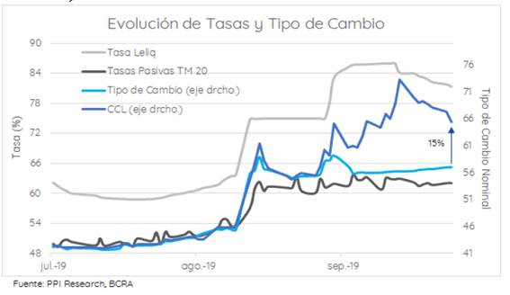
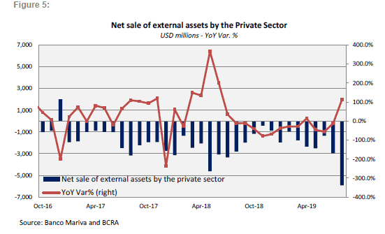
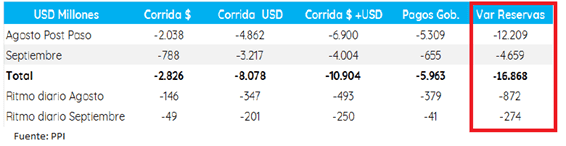
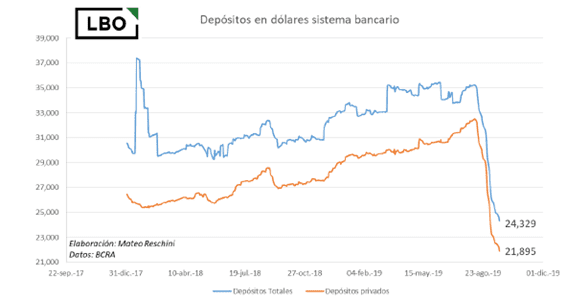

El mercado cambiario luce con menos volatilidad y esto se da gracias a los controles impuestos a comienzo de septiembre. Aun así, los analistas del mercado se encuentran atentos a la dinámica que pueda tomar la brecha, la cual se espera que se incremente conforme los controles cambiarios sean más estrictos. A su vez, en medio de la desconfianza, los retiros de dólares cedieron en cuanto a su volumen, aunque continúan con la dinámica bajista, de igual manera que las reservas del Banco Central.
El futuro de la brecha
La brecha entre el dólar oficial y el dólar contado con liquidación supo alcanzar niveles de 30% en las ultimas semanas y cedió hasta el 13% actual. Desde el mercado esperan que la dolarización de portafolios continúe, aunque con menor acceso al mercado oficial producto de los controles cambiarios, es esperable que caiga la presión sobre el oficial y eventualmente la brecha vuelva a incrementarse en el futuro.
Operadores del mercado consideran que la brecha debería ir incrementándose conforme los controles cambiarios se hagan más estrictos.
“Si el mercado llegase a percibir que los controles cambiarios se tornarán más restrictivos, entonces es esperable que la brecha se amplíe. Difícilmente caiga debajo del 10% y, mientras nos acerquemos al 27 de octubre es posible ver un reflote de la brecha. Luego del 27 de octubre la brecha podría ampliarse en línea con un panorama de un regreso del Gobierno K que podría volver a implementar controles cambiarios restrictivos como lo supo hacer cuando era gobierno”, explicó un operador de cambios de un banco local.
Por su parte, desde Portfolio Personal Inversiones entienden que, en base a experiencias anteriores, es evidente que los controles generan menor dolarización de carteras.
“Esto llevaría a que, en los próximos meses, pueda ir cediendo la presión que genere sobre el tipo de cambio los vencimientos de deuda en pesos y/o la salida de depósitos privados en moneda nacional”, dijeron los analistas de Portfolio Personal Inversiones (PPI).

En un punto intermedio, Mateo Reschini, head de research de LBO considera que parece bastante impredecible el valor de la brecha entre dólares que se consiguen en el mercado oficial y los que se consiguen por bolsa (como el dólar MEP y el CCL) ya que depende de flujos que son bastante difíciles de estimar.
“La compra por atesoramiento de personas físicas se concentra en el oficial todavía y en personas jurídicas pasa por el dólar bolsa por lo que todavía resulta impredecible calcular las necesidades de dólares de personas jurídicas. También hay que tener en cuenta que la dolarización por parte de ahorristas ya se vio desde finales de 2018 hasta ahora por lo que el flujo comprador de dólares tiene más que ver con los flujos que vayan recibiendo que relativo a stocks de capital que puedan querer dolarizar”, dijo Reschini.
Dolarización de portafolios
La incertidumbre tras las Elecciones PASO y el error no forzado del reperfilamiento de la deuda hizo que los inversores sigan buscando refugio en el dólar. El proceso de incertidumbre y dolarización de portafolios se percibe a partir de la dinámica que tomó la cuenta financiera en los últimos meses.
“Esta dinámica se debió principalmente al aumento de las compras netas de activos extranjeros por parte del sector privado no financiero en torno a u$s 5.900 millones (en julio pasado la compra neta de activos extranjeros había alcanzado los u$s 3.000 y u$s 2.800 millones en agosto de 2018). De esta manera, se registró la cifra mensual más alta de la serie a partir de enero de 2003 y con una demanda neta privada más que duplicándose después de las elecciones Paso”, comentaron.
Otra de las causas que destacan desde el Mariva para explicar la caída en la cuenta financiera responde a los pagos capital e intereses de la deuda del Tesoro por u$s 5,300 millones.
“En este contexto, las reservas internacionales cayeron u$s 13.800 millones el mes pasado a u$s 54.100 millones”, dijeron los analistas del banco.

Depósitos y reservas
La incertidumbre terminó impactando negativamente en el humor de la sociedad, haciendo que se acerquen aun más al dólar y retiren sus depósitos, golpeando al stock de reservas. Las reservas siguen bajando, pero como dato alentador, a menor ritmo en los últimos días.
“Desde las PASO se fueron u$s 16.900 millones, divididos en u$s 12.200 millones en agosto, y otros u$s 4.700 millones en lo que va de septiembre. En total vienen cayendo de un ritmo de u$s 872 millones diarios en agosto a uno de u$s 274 millones diarios en los 17 días hábiles de este mes. Incluso menos si tomamos sólo los últimos 7 días hábiles, en donde la caída fue de unos u$s 92 millones promedio por día", dijeron desde PPI.

En lo que respecta a los depósitos, estos también muestran un deterioro importante en las últimas semanas, fundamentalmente desde el sorpresivo resultado de las elecciones PASO. Estos colapsaron desde un máximo de u$s 35.000 millones hasta los u$s 24.329 millones, implicando una caída de 30% desde las Paso. La dinámica bajista de los últimos días continúo.
“Lo que parecía aminorar la caída eran los depósitos en dólares en manos de privados, pero al último dato (19/09) vemos que volvimos a una caída de 1,41% diario. Sin embargo, esta caída desde máximos de la serie todavía nos deja un stock similar a los u$s 8000 a u$s 9000 millones que veíamos a fines del 2015”, dijo Reschini.
